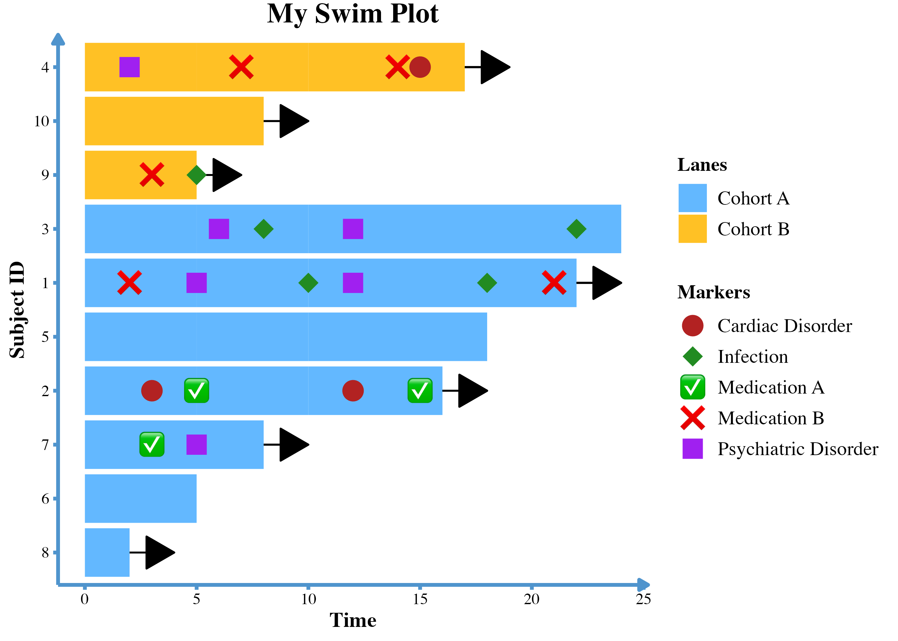
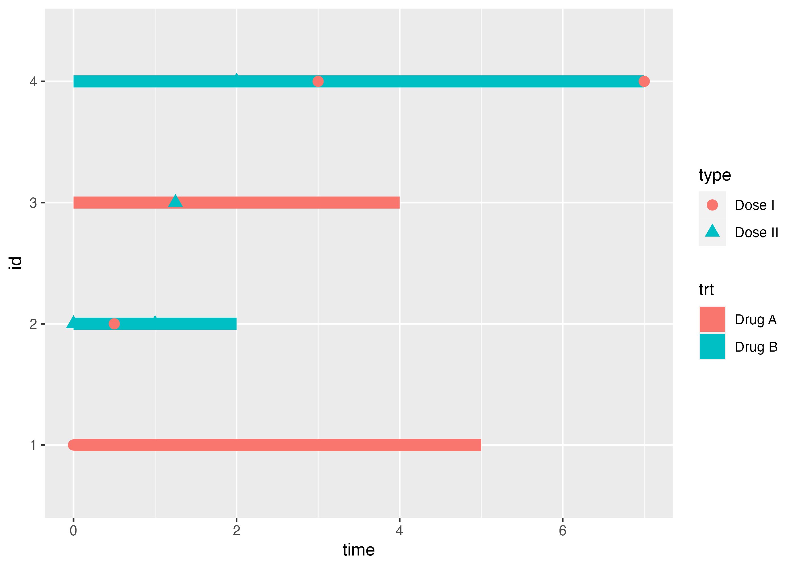

The ggswim package provides a convenient set of commands to easily create swimmer plots. As an extension of ggplot2, it streamlines the process of generating legends that effectively communicate events of interest along subject response paths.
ggswim solves some of the headaches associated with layer management in ggplot2 by organizing and classifying data into “markers” and “lanes.” While nothing changes about the data itself, the way it’s presented winds up being much closer to what’s expected to communicate a swimmer plot’s contents.
Installation
You can install the development version of ggswim like so:
devtools::install_github("CHOP-CGTInformatics/ggswim")Usage
To help you get started, ggswim includes three sample datasets: patient_data, infusion_events, and end_study_events. These de-identified datasets simulate real world data related to infusions, disease assessments, and study statuses for a clinical trial.
ggswim offers several geom-functions, and by using geom_swim_lane() we can set up the horizontal response paths of our swimmer plot, i.e. the “lanes”. We’ll also set up corresponding arrows to indicate subjects that are still on the trial:
library(ggswim)
library(ggplot2)
# Construct arrow_data for arrow display later
arrow_data <- patient_data |>
dplyr::left_join(
end_study_events |>
dplyr::select(pt_id, label),
by = "pt_id"
) |>
dplyr::select(pt_id, end_time, label) |>
dplyr::filter(.by = pt_id, end_time == max(end_time)) |>
dplyr::filter(is.na(label)) |>
unique()
p <- patient_data |>
ggplot() +
geom_swim_lane(
mapping = aes(
x = start_time, y = pt_id, xend = end_time,
colour = disease_assessment
)
) +
geom_swim_arrow(
data = arrow_data,
mapping = aes(xend = end_time, y = pt_id)
) +
scale_colour_brewer(
name = "Disease Assessments",
palette = "Set1"
)
p
Next we’ll add on events of interest: end of study updates and infusions. We’ll refer to these as “markers” and call them with the next main “geom” function: geom_swim_marker(). While it is often common to see these datasets as separate components in the wild, we’ll make our lives a little easier during plotting by combining them first.
all_events <- dplyr::bind_rows(
infusion_events,
end_study_events
)
p <- p +
geom_swim_marker(
data = all_events,
aes(x = time_from_initial_infusion, y = pt_id, marker = label),
size = 5
)
p
This looks OK as a default, but it’s not quite as nice as we’d like it to be. Let’s specify that we have particular glyphs and colours we’d like to use for the markers with ggswim’s scale_marker_discrete().
p <- p +
scale_marker_discrete(
glyphs = all_events$glyph,
colours = all_events$colour,
limits = all_events$label,
name = "Study Events"
)
p
Using the custom marker aes() in geom_swim_marker() in combination with specific scale definitions helps us keep the markesr and lanes separate in the legend. Finally, we’ll beautify the plot with familiar ggplot2 techniques and a last finishing touch with theme_ggswim():
p +
scale_colour_brewer(name = "Lanes", palette = "Set1") +
labs(title = "My Swimmer Plot") +
xlab("Time Since Initial Infusion (Months)") + ylab("Patient ID") +
theme_ggswim()
Collaboration
We invite you to give feedback and collaborate with us! If you are familiar with GitHub and R packages, please feel free to submit a pull request. Please do let us know if ggswim fails for whatever reason with your use case and submit a bug report by creating a GitHub issue.
Please note that this project is released with a Contributor Code of Conduct. By participating you agree to abide by its terms.